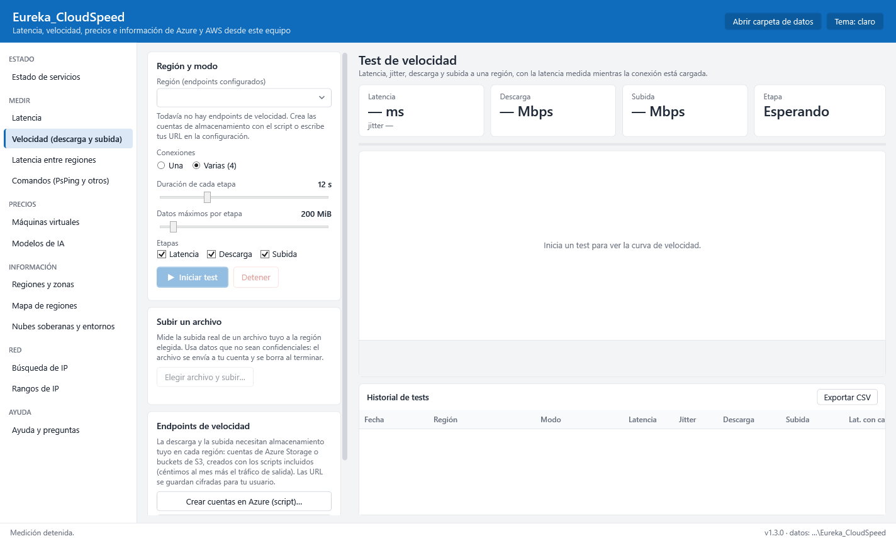
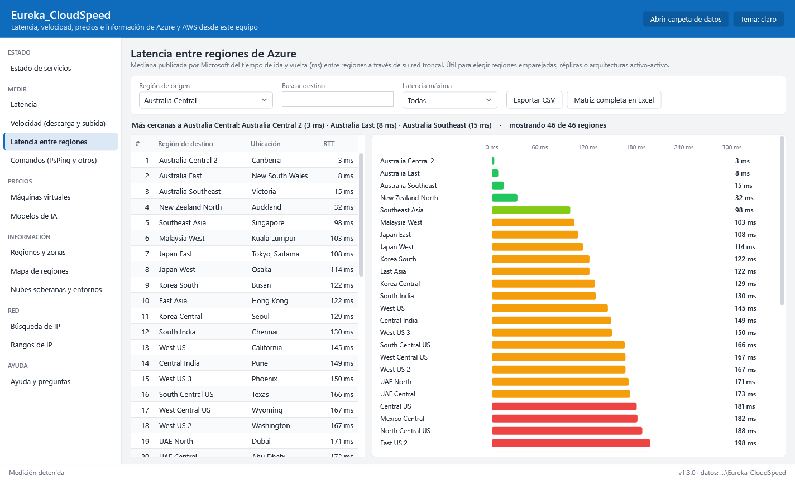
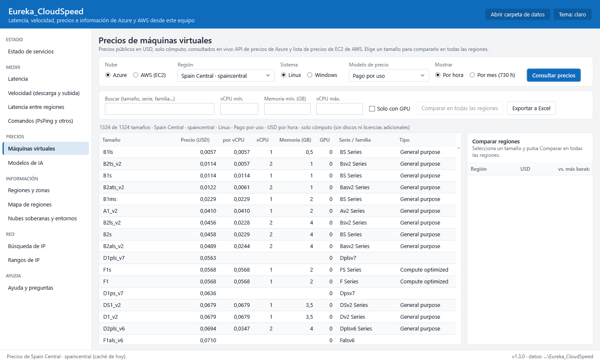
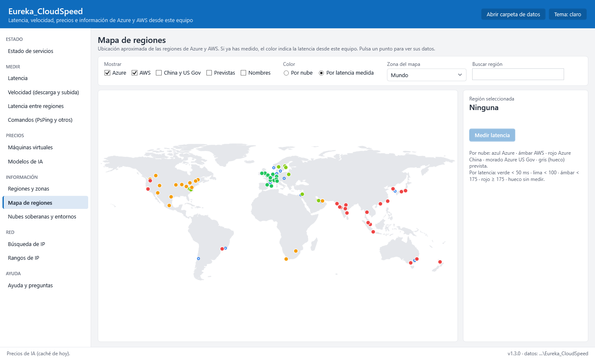
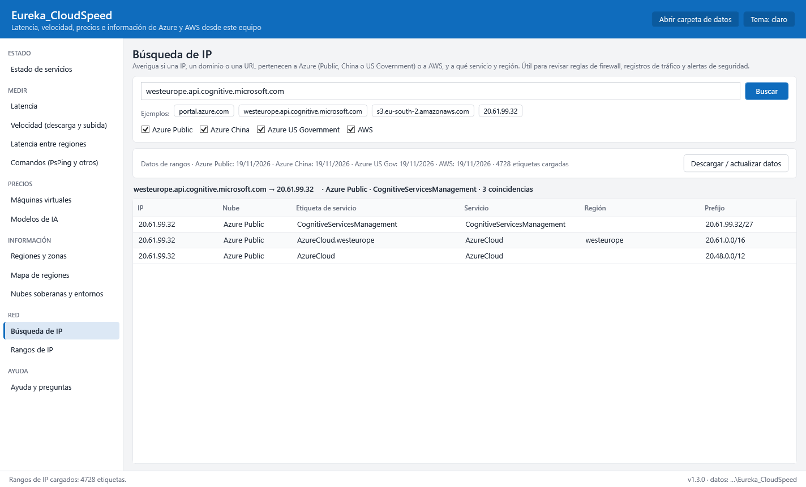

Primeros pasos
- Abre la carpeta de la herramienta y haz doble clic en
Eureka_CloudSpeed.cmd. No necesita administrador ni instalación. - A la izquierda está el menú con las secciones. Arriba a la derecha: Abrir carpeta de datos y Tema (sistema, claro u oscuro).
- La barra inferior muestra lo que está pasando y la carpeta donde se guardan tus datos.
Si usas Eureka_CloudSpeed.exe y Windows lo bloquea ("Smart App Control"), es porque todavía no está firmado. Usa el .cmd.
Estado de servicios

Al abrirla se comprueba automáticamente:
- Estado oficial (tabla superior): lo que publican Azure, Microsoft 365, Power Platform, Azure DevOps, AWS, Google Cloud, Google Workspace, GitHub y Cloudflare.
- Desde tu red (tabla inferior): si los servicios clave responden desde tu red, con el tiempo de DNS, de conexión y de HTTPS.
- Aviso (arriba, con color): el diagnóstico combinado.
| Aviso | Qué significa | Qué hacer |
|---|---|---|
| Todo operativo | Nadie publica incidencias y todo responde. | Nada. |
| Incidencia confirmada | El proveedor la publica y también se nota desde tu red. | Sigue la página de estado del proveedor (botón Abrir página de estado). |
| Caída no publicada | Falla desde tu red, pero el proveedor no dice nada. | Puede ser el inicio de una caída global o algo local (proxy, firewall, VPN). Prueba desde otra red. |
| Página de estado caída | El servicio no responde y su página de estado tampoco. Es típico de las caídas globales. | Consulta las cuentas oficiales del proveedor en redes sociales (Azure Support, Microsoft 365 Status, AWS Support). |
| Problema de tu conexión | Casi nada responde, tampoco el sitio de control. | Revisa tu Internet, DNS o proxy. |
Opciones: Comprobar cada 1, 2, 5 o 15 minutos (sigue funcionando aunque estés en otra sección y avisa en la barra inferior), Guardar histórico (evidencias con fecha y hora para reclamar por el SLA) y Exportar CSV.
Latencia

- En Qué medir elige nubes y geografías, o busca una región. Puedes marcar y desmarcar regiones en la tabla.
- Pulsa Iniciar, o Prueba rápida (10 rondas) para una medición rápida de todas.
- El ranking se ordena solo. Verde < 50 ms, lima < 100, ámbar < 175, rojo ≥ 175.
- Pestañas: Gráfico (P50 con bigote P95), Evolución (mediana por ronda), Mapa (coloreado por latencia) y Azure vs AWS (mejor región de cada nube por geografía).
Cómo medir: muestras por ronda, saludo TLS, Modo continuo (rondas cada 10 s a 10 min), Etiqueta (por ejemplo "Oficina · fibra" o "Casa · VPN") y Guardar en el histórico (necesario para Power BI).
Tu conexión: muestra tu IP pública, ubicación aproximada y operador (consulta a ipinfo.io solo al pulsar).
Exportar: Excel con gráficos, Power BI (histórico), CSV e informe HTML. Activa Ocultar el nombre del equipo antes de compartir informes.

Velocidad (descarga y subida)

Mide latencia, jitter, descarga y subida a una región, y la latencia con carga: si sube mucho durante la transferencia, tu línea se satura. Necesita almacenamiento propio en cada región:
- Azure: botón Crear cuentas en Azure (script) → copia el comando. Requiere Azure CLI y una suscripción.
- AWS: botón Crear buckets en AWS (script). Requiere AWS CLI e iniciar sesión (
aws login --region eu-north-1, con la región de tu proyecto).
Cuando el script termina, la sección se recarga sola. Elige la región, Una o Varias (4) conexiones, la duración y pulsa Iniciar test. Subir un archivo mide la subida de un archivo tuyo (no confidencial; se borra al terminar).
Herramientas\Probar-Velocidad.ps1 -Nube AWS -Region eu-north-1 crea el almacenamiento, mide, lo borra siempre y comprueba que no queda nada. Al final te pregunta si quieres mantener la sesión de la CLI o cerrarla. Con Azure en otro directorio: -Nube Azure -Tenant <directorio>.Latencia entre regiones y Comandos

Latencia entre regiones: elige la región de origen y verás la mediana publicada por Microsoft hasta cada región de Azure. Puedes filtrar por máximo de milisegundos, exportar a CSV o descargar la matriz completa en Excel.
Comandos: genera comandos psping, Test-NetConnection, un bucle de PowerShell y curl para medir desde otros equipos. Medir esta región lo hace al momento con histograma.
Precios

- Máquinas virtuales: elige nube, región, sistema y modelo (Azure: pago por uso, Spot, planes de ahorro y reservas de 1 y 3 años; AWS: bajo demanda) y pulsa Consultar precios. Filtra por texto, vCPU, memoria o GPU; muestra por hora o por mes. Comparar en todas las regiones enseña dónde es más barato el tamaño elegido. Exportar a Excel.
- Modelos de IA: precios de Azure OpenAI y Microsoft Foundry en USD por millón de tokens, por tipo (entrada, salida, caché) y despliegue (Global, Data Zone, Regional, Batch).
Los precios son públicos, en USD y solo de cómputo; se guardan en caché durante el día.
Información: regiones, mapa y nubes

- Regiones y zonas: Azure global, China, US Gov, previstas y AWS, con ubicación, región emparejada, zonas de disponibilidad, acceso, residencia de datos y latencia medida. Vista Por geografía. Doble clic → la ve en el mapa.
- Mapa de regiones: color por nube o por latencia, zoom por continente, búsqueda. Pulsa un punto para ver sus datos y Medir latencia.
- Nubes soberanas y entornos: Azure global, US Government y China, y la tabla de endpoints de cada entorno.
Red: búsqueda y rangos de IP

- Búsqueda de IP: escribe una IP, un dominio o una URL. Te dice si pertenece a Azure (Public, China, US Gov) o a AWS, con la etiqueta de servicio, la región y el prefijo. La primera vez descarga los rangos oficiales.
- Rangos de IP: filtra por nube, servicio, región o etiqueta y copia o guarda los prefijos IPv4/IPv6 (por ejemplo, para reglas de firewall).
Power BI (versión gratuita)
- Mide con Guardar en el histórico activado.
- Pulsa Power BI (histórico): se abre la carpeta
Exportaciones\PowerBI. - Doble clic en
Abrir_en_Power_BI.pbids(o en Power BI Desktop: Obtener datos > Libro de Excel) y carga las tablas Mediciones, Regiones y Sesiones. - Pega las medidas de
Medidas.daxy sigueGuia-Power-BI.html.
Para acumular histórico automáticamente: Eureka_CloudSpeed.cmd -SinInterfaz -Etiqueta "Oficina" en el Programador de tareas.
Privacidad y tus datos
- Todo se guarda en tu equipo (carpetas
DatosyExportaciones). No hay telemetría. - El histórico se borra solo al superar el plazo de conservación (12 meses por defecto). Cámbialo en Ayuda → Privacidad: tus datos, donde también puedes Borrar todo el histórico.
- Ocultar el nombre del equipo sustituye el nombre por un seudónimo en exportaciones e histórico.
- Las URL del test de velocidad se guardan cifradas para tu usuario de Windows.
- Lo que se crea en Azure o AWS para pruebas se borra con
-Eliminar, o automáticamente conProbar-Velocidad.ps1.
Problemas frecuentes
| Síntoma | Solución |
|---|---|
| Windows bloquea el .exe | Usa Eureka_CloudSpeed.cmd (los .exe aún no están firmados). |
| El .exe dice que los archivos no coinciden | El código ha cambiado: recompila con Build\Build-Exe.ps1 (con la app cerrada) o usa el .cmd. |
| Velocidad: el desplegable está vacío | Faltan endpoints: crea el almacenamiento con el script de Azure o AWS. |
| Velocidad: región "(caducado)" | Renueva: aws login + Crear-BucketsVelocidad.ps1 -Renovar, o Crear-CuentasVelocidad.ps1 -Renovar. |
aws o az no se reconoce | Cierra y abre la consola después de instalar la CLI. |
aws login da error 400 o aviso de región | Usa la región de tu proyecto: aws login --region eu-north-1. |
| Azure: "No subscriptions found" | Tu directorio no tiene suscripciones: créala en el portal (Suscripciones → Agregar) o indica otro directorio con -Tenant. |
| Una región aparece "Sin endpoint" | No tiene endpoint regional público; puedes poner un host propio en Catalog\regions.json. |